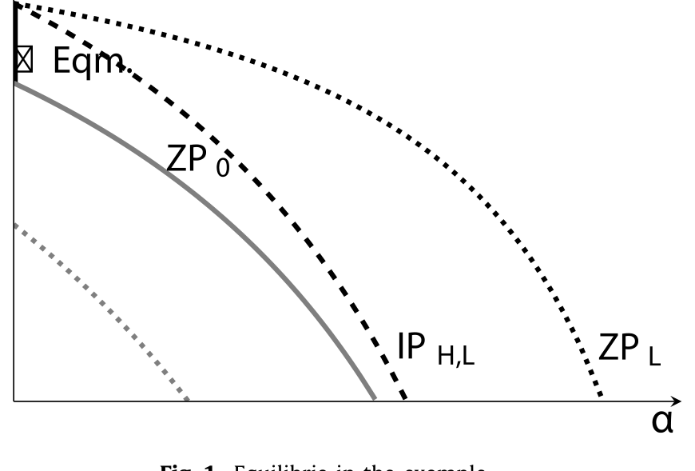
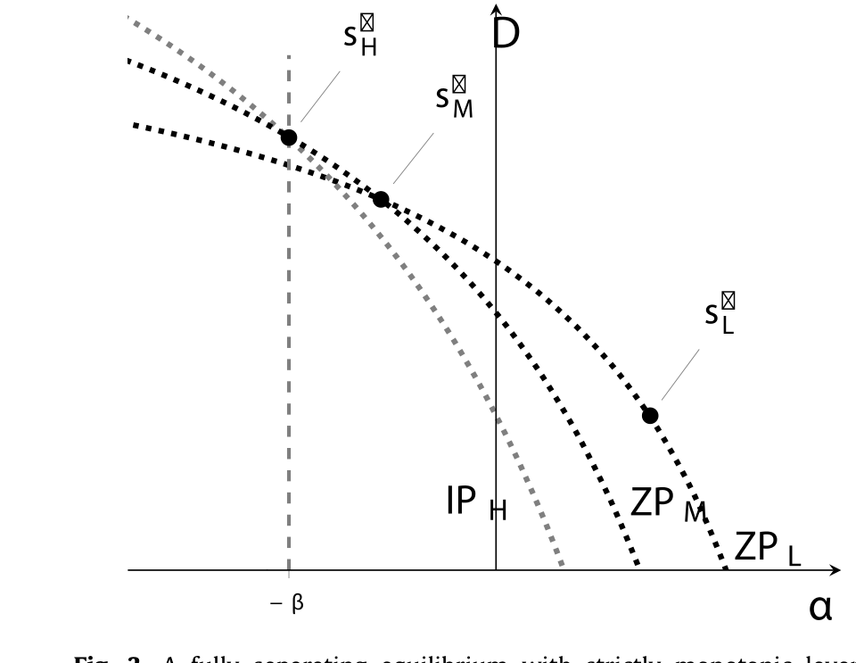
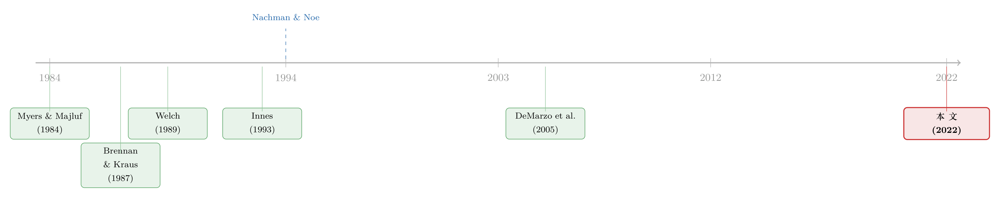

自由进入的市场里，为什么钱还能「白赚」？
本文读的是 Bernhardt, Koufopoulos & Trigilia (2022, JFE)：把经典证券设计模型里「投资者竞争 = 零利润」这一条悄悄抽掉，只保留「投资者愿意进入就行（非负利润）」，再允许公司自己给证券报价。结果整个均衡集合被改写——好公司发行被低估的债，让投资者赚到严格为正的利润；差公司发行更「陡」的证券（股权）。啄食顺序与「发行折价」第一次在一个自由进入的市场里被同时讲圆。
1 一个让人不舒服的前提
先讲一个几乎所有人都默认、却很少有人追问的假设。
在公司金融里，只要谈到「竞争性的资本市场」，我们脑子里几乎自动浮现一句话：投资者赚不到钱。竞争把价格压到公平价，期望利润归零。Myers 与 Majluf 那篇奠基性的 信息不对称 (asymmetric information) 论文如此，Nachman 与 Noe（1994，下称 NN）给「啄食顺序理论」(pecking-order theory) 做的经典微观基础也是如此——在满足有限责任与单调性的证券里，只要现金流分布满足 条件随机占优 (conditional stochastic dominance)，发行风险债就是唯一最优，而且所有公司汇聚 (pool) 在同一份债上，这份债按全市场的平均类型定价，投资者期望利润恰好为零。
这套结论漂亮，但它有两个让人别扭的地方。
第一，NN 里所有公司发的是同一份债。可经验研究里，「更好的公司更多地用债」是个被反复检验的命题（Frank & Goyal, 2003；Fama & French, 2005）。如果大家发的债一模一样，这些检验根本无从谈起——正如 Leary 与 Roberts（2010）尖锐地指出的，「严格地说，啄食顺序理论根本不允许任何储蓄行为或股权发行」。
第二，这份汇聚债是按平均类型公平定价的。可现实里，大量证券在发行时是被低估的（想想信用利差之谜，Bai et al., 2020）。公平定价，意味着投资者一分钱不赚——这跟我们看到的「发行折价」对不上。
于是一个自然的问题是：这两条裂缝，是模型抓住的「真相」，还是某个多余假设留下的人造痕迹？
这篇论文的回答干脆得近乎挑衅：是后者。罪魁祸首，就是「竞争 = 零利润」这一条。
2 把「零利润」拆下来，换上「自由进入」
作者动了两处，都很小，但合起来颠覆了结论。
第一处改动：不再把「投资者之间的竞争」外生地等同于零利润。他们只要求投资者是个体理性的——期望利润非负就行。竞争被建模成风险中性投资者的自由且无成本进入 (free entry)。于是均衡利润是模型算出来的结果，而不是事先钉死的假设。
这是全文的「阿基米德支点」。零利润不是被否定，而是被释放：它从一条公理，降格为一种特殊情形。
第二处改动：允许公司给自己的证券报价。在 NN 里，公司只能选证券，然后投资者在拍卖里竞价；公司不能说「我要按某个利率借走 $1」。而现实中的私募配售、银行贷款恰恰是反过来的——一笔固定金额、固定利率的银行贷款，本质上就是公司提着价格来融资。于是一份合约被写成
$$ c := \big(s(x),\, Q(s)\big), $$
其中 \(s(x)\) 是证券（payoff 随现金流 \(x\) 变化），\(Q(s)\) 是公司提出的售价。投资者只能接受或拒绝。
就这两下，NN 的世界被撬开了一道缝。
接着，一个自然的问题是：在自由进入的市场里，投资者凭什么还能赚到正利润？ 自由进入不是应该把利润瞬间磨平吗？要回答它，先看一个最朴素的数字例子。
3 一个 $1、两种公司的例子
一家公司要融 \(1 做项目。好公司 (high type) 的项目以概率 \)f_H$ 产出 \(x_H\)、否则为零；差公司 (low type) 以概率 \(f_L\) 产出 \(x_L\)、否则为零。设定 \(x_H > x_L > 0\)、\(1 > f_H > f_L > 0\)。无风险利率为零，投资者风险中性、自由进入。公司只能发债、发股，或两者的组合：债给债权人 \(\min\{x, D\}\)，股权（次级于债）给股东 \(\alpha(x-D)^+\)，其中 \(\alpha\in[0,1]\) 是卖出的股份比例。
作者取了一组很好算的数：$x_H=\$6,\ x_L=\$4,\ f_H=\tfrac34,\ f_L=\tfrac13,\ p_L=0.5$。
在 \((\alpha, D)\) 平面上，先画几条零利润线 (zero-profit curve)：\(\mathrm{ZP}_i\) 是让投资者在类型 \(i\) 上恰好不赚不赔的所有组合，即
$$ f_i\big[\alpha(x_i-D)^+ + \min\{x_i, D\}\big] = 1 . $$
把好公司单独拎出来，它的零利润线 \(\mathrm{ZP}_H\) 最靠下（融资便宜），差公司的 \(\mathrm{ZP}_L\) 最靠上，混合池的 \(\mathrm{ZP}_0\) 夹在中间：\(\mathrm{ZP}_H < \mathrm{ZP}_0 < \mathrm{ZP}_L\)。

Figure 1: Equilibria in the example
NN 的均衡是哪个点？是 \(\mathrm{ZP}_0\) 上的纯债——两类公司一起汇聚，按平均类型公平定价，投资者零利润。作者先承认：这个均衡确实还在。但它只是众多均衡里的一个，而且——后面会看到——是「刀刃上」(knife-edged) 的那一个。
真正有意思的是另一类均衡。让好公司只发落在 \(\mathrm{ZP}_L\) 上的纯债，差公司只发落在 \(\mathrm{ZP}_L\) 上的股权。算一下：纯债在 \(\mathrm{ZP}_L\) 上意味着 \(f_L\cdot D = 1\)，即 \(\tfrac13 D = 1\)，\(D=3\)。售价 $Q=\$1$（按差公司定价，恰好破本）。
可这份债其实是好公司发的。它对投资者的真实价值是
$$ f_H \cdot \min\{x_H, D\} = \tfrac34 \cdot \min\{6,3\} = \tfrac34 \cdot 3 = 2.25 . $$
投资者花 $1 买到了价值 $2.25 的债——白赚 $1.25。换句话说，这份债从好公司的角度看是被低估的 (underpriced)：售价 $1，全信息价值却是 $2.25。
那好公司为什么甘心被「白宰」？因为它若想占便宜，差公司会跟得更紧。关键的一步在于：好公司发这份债的等利润线 \(\mathrm{IP}_{H,L}\)（由 \(\tfrac34[\alpha(6-D)^+ + \min\{6,D\}] = 2.25\) 定义）整条都压在 \(\mathrm{ZP}_L\) 之下（只要 \(\alpha>0\)）。这意味着——
任何能让好公司更得利的偏离，必然也让差公司更得利。
于是反转出现了：投资者面对一份偏离合约，完全可以悲观地相信「这是差公司来浑水摸鱼」，从而拒绝。这种悲观信念是「讲得通」的——标准的 D1 精炼 (Cho & Kreps, 1987) 在这里毫无约束力（has no bite）。正是这份「可以合理地悲观」，撑起了好公司债上的正利润。
这跟 IPO 折价的逻辑根本不同。在 Welch（1989）、Allen 与 Faulhaber（1989）的信号模型里，好公司主动在桌上留钱（折价）当作昂贵信号，为的是将来 SEO 时拿到更便宜的钱——折价是一种投资。而这里的好公司永远不想分离：它被低估，一次，而且没有后续融资轮次来补偿。折价不是它的选择，是 incentive compatibility 强加给它的代价。
例子的两条实证含义已经很清楚：(i) 好公司比差公司发更多的债；(ii) 投资者在好公司的均衡债上赚取严格为正的期望利润。 现在的问题是，这个直觉能不能扛过一个一般化的 NN 环境。
4 一般模型：把支点放进 NN 的框架
两期 \(t\in\{0,1\}\)，两类风险中性公司，项目在 \(t=0\) 需要 $\$1$。类型 \(\theta\in\{\theta_L,\theta_H\}\)，\(\theta_H>\theta_L>1\)（都是正 NPV，值得融资）。类型 \(\theta\) 的现金流 \(\tilde x\) 落在共同有限支撑 \([0,\bar x]\) 上，密度为 \(f_\theta\)，满足单调似然比性质 (monotone likelihood ratio property, MLRP)：
$$ \frac{\partial}{\partial x}\frac{f_H(x)}{f_L(x)} > 0,\quad \forall x\in[0,\bar x]. $$
直觉上，现金流 \(x\) 越大，它来自好公司的后验概率越高。（NN 用的是更弱的条件随机占优，但文献多用 MLRP，因为更好处理且不改经济直觉。）
可行证券沿用 NN 的两个限制：有限责任 \(s(x)\in[0,x]\)，单调性 \(s(x)\ge s(x')\) 且 \(x-s(x)\ge x'-s(x')\)（公司和投资者拿到的都随现金流不减）。记 \(E[s(\tau)] := E[s(x)\mid\theta=\tau]\) 为证券在类型 \(\tau\) 下的全信息价值。
核心是类型 \(\theta\) 公司发合约 \(c=(s,Q(s))\)、投资者接受决策为 \(r\in\{0,1\}\) 时的收益（论文式 (1)）：
这里 \(r=1\) 表示投资者接受、项目上马；\(r=0\) 则公司价值为零。读懂 \(a3\) 是读懂全文的钥匙：被低估说的正是 \(Q(s) < E[s(\theta)]\)——售价低于这份证券在真实（好）类型下的价值，那块差额就落进了投资者口袋。
均衡概念是满足 D1 精炼的纯策略 完美贝叶斯均衡 (Perfect Bayesian Equilibrium, PBE)，作者称之为「合理的」(reasonable) 均衡。
为了刻画「谁比谁更陡」，他们借用 DeMarzo, Kremer 与 Skrzypacz（2005）的陡峭度 (steepness) 概念：证券 \(s\) 从下方穿过 \(s'\)，若 \(E[s(\theta_i)]=E[s'(\theta_i)]\) 蕴含 \(E[s(\theta_{i+1})]>E[s'(\theta_{i+1})]\)。直观地说，越陡的证券对类型信息越敏感——股权从下方穿过债，所以股权比债更陡。这把尺子待会儿要用来排座次：好公司发最「平」的债，差公司发更「陡」的股。
4.1 为什么零利润必然逼出「完全汇聚」
先看一条「不可能」结论。
Lemma 1（分离不可能于零利润下）. 不存在这样的分离均衡：其中每种类型发的证券都被公平定价（\(E_\theta[s_\theta(x)]=Q(s_\theta)\)，对所有 \(\theta\)）。
为什么？在经典证券设计里，任何满足标准精炼的部分汇聚 (partial-pooling) 均衡都必须同时满足三条性质：
- 差公司在「模仿 vs. 不模仿」高类型证券之间恰好无差异（激励约束紧绑）；
- 差公司发的证券在均衡中不会被低估；
- 不同类型的零利润线互不相交。
把这三条摞在一起，结论是：在任何部分汇聚均衡里，投资者必然要在好公司身上赚到正利润。于是「投资者期望零利润」就只剩一种可能——完全汇聚 (full pooling)，即 NN 那一个点（Innes, 1993；Nachman & Noe, 1994）。
到这里，论文的逻辑闭环了：正是「零利润」这把锁，把均衡死死锁在了「人人发同一份债」上。 把锁打开，分离均衡、正利润、被低估的债，全都涌了进来。
4.2 完整刻画：从分离到汇聚的连续谱
放开零利润后，均衡集合长这样：
- 分离均衡：好公司发落在 \(\mathrm{ZP}_L\) 上的纯债（被低估，投资者赚正利润）；差公司发任意 \(\alpha>0\)、落在 \(\mathrm{ZP}_L\) 上的债股组合（公平定价）。好公司的债是「最平的可行证券」——在给定期望价值下，它把好公司被低估的程度压到最小（DeMarzo et al., 2005 意义下）。正因为最平，任何利好好公司的偏离也利好差公司，悲观信念因而合理，均衡被撑住。
- 汇聚均衡：不只是 NN 那个零利润点。存在一整段连续的汇聚均衡，所有公司一起发被低估的债。折价最严重的那一端，对应「债被定价成『若由差公司发则投资者破本』」——也就是和部分汇聚同样的定价逻辑。
这里藏着一个反直觉的对照。在别的证券设计里，部分汇聚通常对某些类型更友好；可在本文里，所有公司在部分汇聚下（一般地）都比在完全汇聚下更差。原因是：部分汇聚把更重的折价压到了好公司头上，而它又没有未来融资轮次来回血。
一句话提炼第 4 节：除了 NN 那个零利润均衡，其余每一个均衡都带着严格为正的投资者利润。 文献长期聚焦的那个零利润汇聚均衡，是「刀刃」上的特例，而非常态。
5 给「净杠杆回归」一个微观基础
到第 4 节，好公司和差公司发的债其实一样多（都恰好融 $1）。这跟实证里「杠杆随质量严格单调」还差一口气。补上这口气的，是第 6 节一个看似不起眼的扩展：让公司期初就背着一笔外生的存量债与存量股，且这些股可以回购。
这个设定的妙处在于它的「中间性」。Brennan 与 Kraus（1987）早就证明：若公司有足够多的股可回购，不同类型的零利润线会相交，于是无需正利润也能完全分离。而 NN 是另一极端——根本没有存量可回购。本文站在两者之间：公司有正的、但有限的证券可回购。
在一个三类型设定里，作者找到了杠杆严格单调、且投资者利润为正的完全分离均衡：
- 好公司：发债，并把手里能回购的股全部回购。这份债被定价成「若由中类型发则恰好破本」，所以由好公司发时，投资者赚正利润。
- 中类型：回购更少的股，发的债按自己的全信息利率定价。
- 差公司：发公平定价的股权（或其它比债更陡的证券）。
于是均衡杠杆 \(\text{高} > \text{中} > \text{低}\)，严格单调——这正好为实证里常跑的「净杠杆回归」提供了一个干净的微观基础。

Figure 3: A fully separating equilibrium with strictly monotonic leverage
如图 3 所示，三类公司的杠杆被存量回购这条暗线拉开成一个严格递增的阶梯：质量越高，回购越多、发债越多、被低估也越多。
6 文献脉络
把这条线索捋一遍，能更清楚地看到这篇论文站在哪儿。
源头是 Myers（1984）与 Myers 和 Majluf（1984）：信息不对称下，公司优先发债，因为债把最好公司被错误定价的程度压到最小——这就是啄食顺序的雏形。但它还只是直觉，缺一个严密的均衡基础。
首先，Innes（1993）与 Nachman 和 Noe（1994）补上了这块基础：在有限责任、单调、零利润的证券里，债是（唯一）最优，所有公司汇聚于债。NN 成了整条文献的锚点。接着，DeMarzo 与 Duffie（1999）、DeMarzo、Kremer 与 Skrzypacz（2005）把「证券有多陡」这件事形式化，给了我们排座次的尺子。与此并行的，是 Welch（1989）、Allen 与 Faulhaber（1989）那条用折价当信号的 IPO 文献——折价在那里是好公司主动付的、能在 SEO 里赚回来的成本。而真正被本文翻出来重读的，是 Brennan 与 Kraus（1987）那个「存量可回购则零利润线相交」的设定。

本文的位置因此很清楚：它不否定 NN，而是指出 NN 结论的全部分量都压在「零利润」这一条外生假设上。把它换成「自由进入 + 非负利润 + 允许报价」，啄食顺序、发行折价、单调杠杆——这些零散的实证事实，第一次在同一个自由进入的框架里被讲圆。在信用市场这个角落，逆向选择如何塑造定价与中介利润，也是一条活跃的线索（关于顺序信贷市场里那条「越借越贵的中介利润」，可参见《钱越来越好借，中间商却越赚越多》；关于债与股都是现金流上的期权、如何被信息不对称同时定价，可参见《同一份分歧，两副面孔》）。
7 评论与延伸（Q&A + 研究方向）
(a) 几个可能的疑问
Q：自由进入了，投资者凭什么还能赚到正利润？这不违反竞争吗？
不违反。利润不是来自信息优势，而是来自激励相容：好公司债上的那块利润，是用来「劝退」差公司模仿的。任何把价格压低的偏离都会同时招来差公司，于是悲观的均衡外信念（D1 在此无约束力）让这种偏离无利可图。竞争压平的是「能被套利的价差」，而这块利润恰恰不能被套利——你想压价，就会被差公司淹没。
Q：这跟 IPO 折价的信号理论到底差在哪？
差在「谁想分离、折价能否赚回」。信号模型里好公司主动折价、并在未来 SEO 赚回，分离对它有利；本文里好公司从不想分离，它被低估一次、且没有后续轮次补偿。折价在前者是投资，在后者是被 incentive compatibility 摊派的成本。
Q：D1「无约束力」是不是在偷偷挑信念、把结论凑出来的？
关键在于好公司的均衡证券是最平的可行证券。正因为最平，「利好好公司的偏离必利好差公司」这一性质成立，于是把偏离归因于差公司的悲观信念是满足 D1 的、而非任意挑的。换句话说，是证券的几何性质（陡峭度）让悲观信念变得「合理」，不是反过来。
Q：NN 那个零利润汇聚均衡被推翻了吗？
没有被推翻，但被「降级」了。它依然是一个均衡，只是从「唯一」变成了「刀刃上的特例」——除它之外的每一个均衡都带正利润。作者用「knife-edged」精确地刻画了它的脆弱性。
Q：为什么把价格报出来这么重要？
因为它把合约空间扩大了，更重要的是它刻画了私募配售、银行贷款这类「固定金额 + 固定利率」的融资——公司是提着价格来的。在 NN 里融到的钱是否被竞争推到 $1 是假设；在这里，它是模型算出来的结果。
Q：正利润均衡稳健吗，会不会对类型分布的假设很敏感？
相当稳健。每份证券都被定价成「若由差类型发则投资者破本」，因此均衡不依赖类型占比 \(p_i\) 或各类型现金流分布的具体形状——这对「模糊厌恶」(ambiguity aversion) 下的证券设计文献（Carroll, 2015；Lee & Rajan, 2018；Malenko & Tsoy, 2020）尤其有意义。
(b) 几个可能的研究问题与提案
1. 把「正利润折价」搬到公司债一级市场去检验。
【经济故事】本文预测：质量更高的发行人发的债被低估更多、给买方（承销团/机构）的利润更高。这与「信号型折价」给出相反的横截面排序——后者预测好公司主动折价。两者在数据里可以掰手腕。 【可行性】中。需要一级发行价 + 二级开盘价（TRACE）+ 发行人质量代理（评级、KMV 违约距离）。识别难点在于把「逆向选择折价」和「流动性/承销折价」分开；可借私募 vs. 公募的差异（本文强调私募配售最贴合其机制）做横截面对照。
2. 外资持有人是不是那个「愿意持有被低估债」的边际买方？
【经济故事】本文的正利润落在「接得住被低估债」的投资者身上。若某类投资者（如外资机构）系统性地承接了这块折价，他们的持有应当与发行折价、与发行人质量正相关。 【可行性】中。需要债券层面的持有人数据（如 eMAXX/Mergent）与发行折价匹配。识别上要小心：外资偏好可能同时关联流动性与货币风险，需要控制甚至工具化。可与本博客关注的「外资公司债持有人 ↔ 流动性」议题对接。
3. 存量资本结构如何决定单调杠杆——把第 6 节拿去做结构估计。
【经济故事】第 6 节预测：可回购的存量越多，类型间杠杆越能被「掰开」成严格单调。那么期初杠杆的外生差异应当预测后续发行的单调性强弱。 【可行性】中偏低。模型可结构化估计（Compustat 历史资本结构 + 发行事件），但「可回购量」的外生变异难找；或可借股票回购的税制/法律冲击作为准实验来源。诚实地说，把「可回购量」干净地外生化是这个方向最大的拦路虎。
4. 银行贷款利润：信息优势 vs. 激励相容，谁说了算？
【经济故事】传统观点把银行利润归于信息优势（Dell'Ariccia & Marquez, 2004），但近年证据显示连金融科技放贷者也主要靠硬信息打分（Di Maggio & Yao, 2020）。本文给出第三种解释——利润纯由激励相容驱动，不需要信息优势。 【可行性】高。可比较「信息优势强/弱」的放贷者（关系型银行 vs. 平台/银团）在同质借款人上的利润，看利润是否随信息优势消失而消失。若不消失，则偏向本文机制。数据上 DealScan + 借款人层面控制即可起步。
参考文献
- Allen, F., Faulhaber, G.R. (1989). Signaling by underpricing in the IPO market. Journal of Financial Economics 23(2), 303–323.
- Bernhardt, D., Koufopoulos, K., Trigilia, G. (2022). Separating equilibria, underpricing and security design. Journal of Financial Economics 145(3), 788–801.
- Brennan, M., Kraus, A. (1987). Efficient financing under asymmetric information. Journal of Finance 42(5), 1225–1243.
- Cho, I., Kreps, D.M. (1987). Signaling games and stable equilibria. Quarterly Journal of Economics 102, 179–221.
- DeMarzo, P., Duffie, D. (1999). A liquidity-based model of security design. Econometrica 67(1), 65–99.
- DeMarzo, P., Kremer, I., Skrzypacz, A. (2005). Bidding with securities: auctions and security design. American Economic Review 95(4), 936–959.
- Innes, R. (1993). Financial contracting under risk neutrality, limited liability and ex ante asymmetric information. Economica 60(237), 27–40.
- Leary, M.T., Roberts, M.R. (2010). The pecking order, debt capacity, and information asymmetry. Journal of Financial Economics 95(3), 332–355.
- Myers, S.C. (1984). The capital structure puzzle. Journal of Finance 39(3), 574–592.
- Myers, S.C., Majluf, N.S. (1984). Corporate financing and investment decisions when firms have information that investors do not have. Journal of Financial Economics 13(2), 187–221.
- Nachman, D.C., Noe, T.H. (1994). Optimal security design. Review of Financial Studies 7(1), 1–44.
- Welch, I. (1989). Seasoned offerings, imitation costs, and the underpricing of initial public offerings. Journal of Finance 44(2), 421–449.